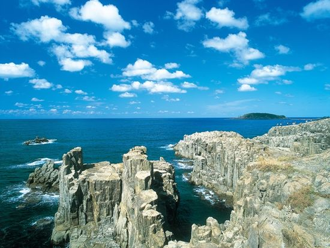
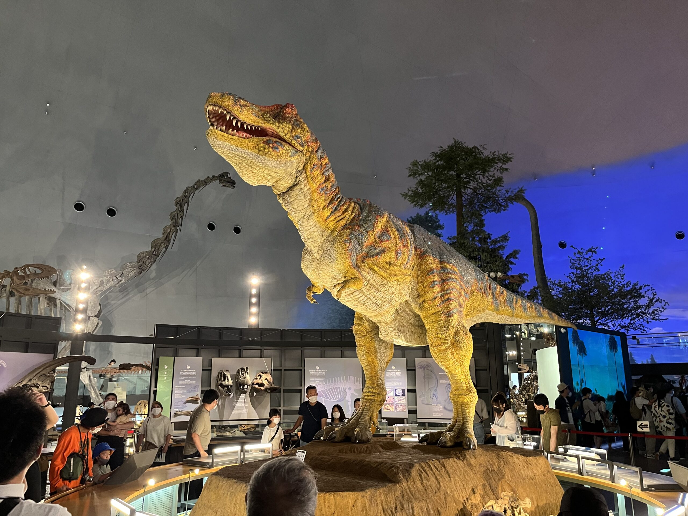

東尋坊
弾丸絶壁が続く日本海を見渡せる最高のスポット！ 日本海の荒波によって削られた雄大な景色が特徴で、国の天然記念物にも指定されており、夕焼けもきれいです！

福井県立恐竜博物館
日本最大級の恐竜博物館で全国からたくさんの観光客が訪れるスポットの一つ！リアルな化石や全体図を表す模型が迫力あり 驚愕するほどに！最近ではティラノサウルスなど動いて発声する模型など表れて動画や写真を撮る人が多い！

一乗谷朝倉氏遺跡
戦国時代の城下町全体が遺跡となって残された全国でも珍しい大規模遺跡。中でも庭園が美しく室町時代を思い出させるほどに。 自然豊かないいところなので、自然が好きな人や散歩好きにはぽススメな町！